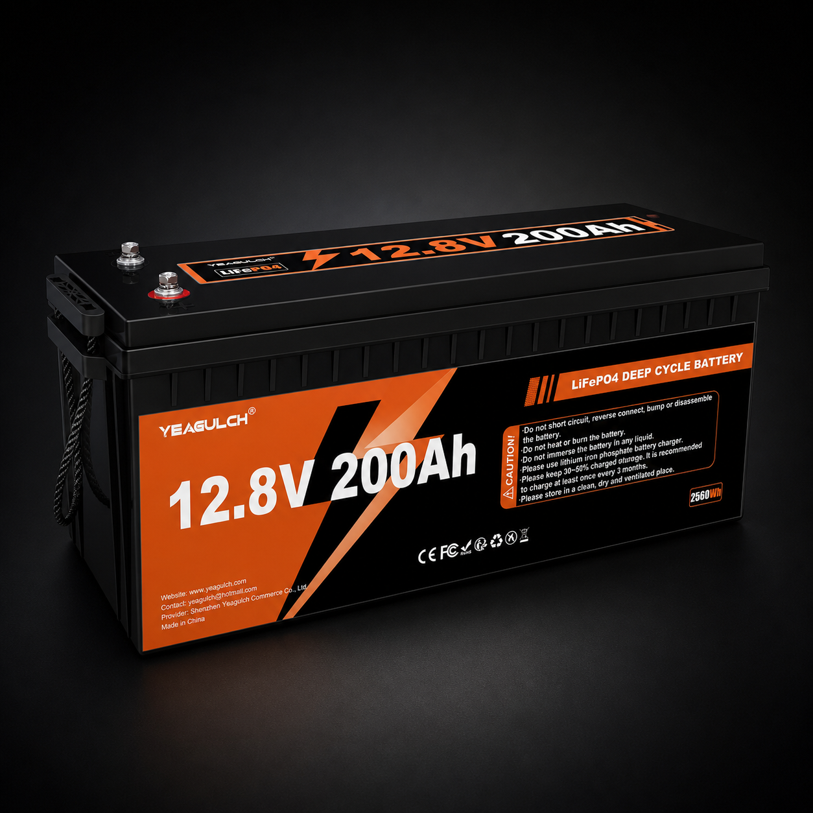
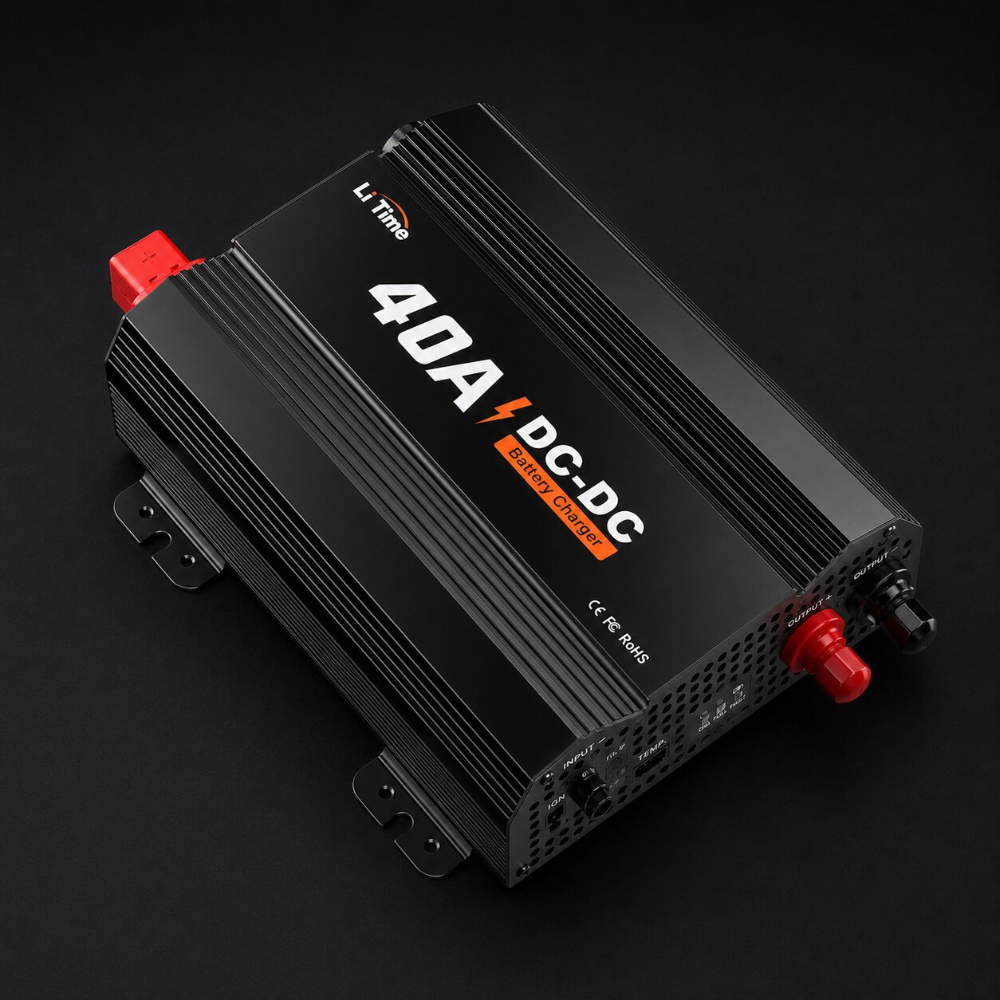
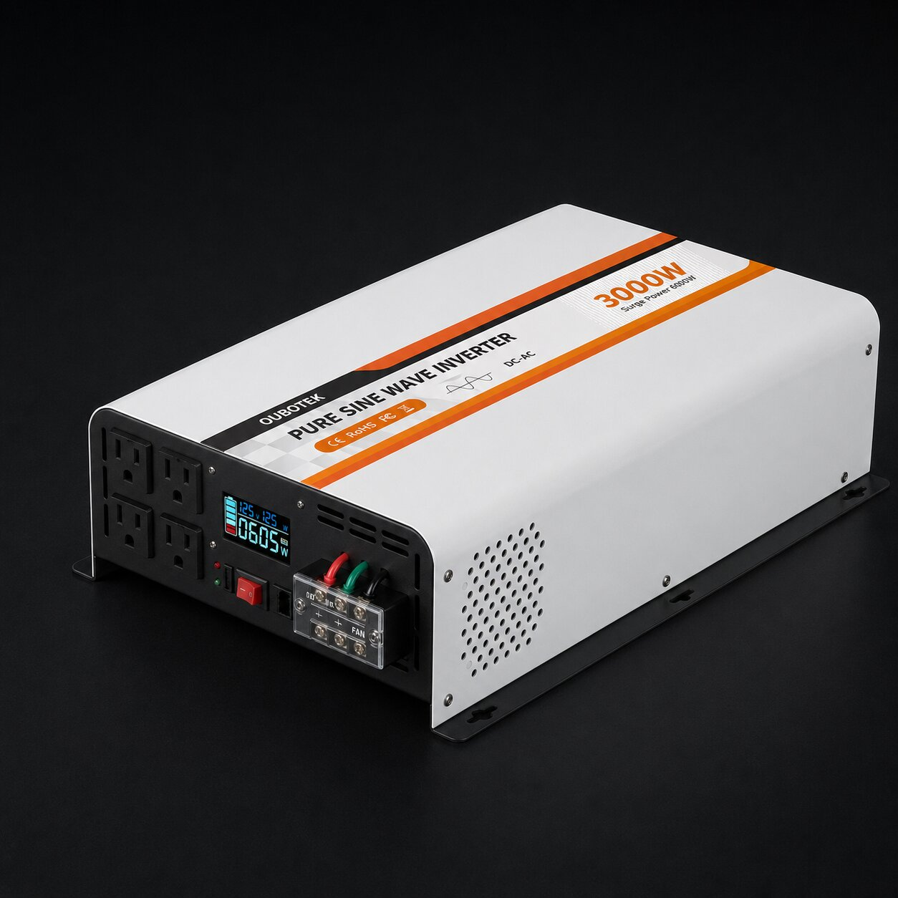
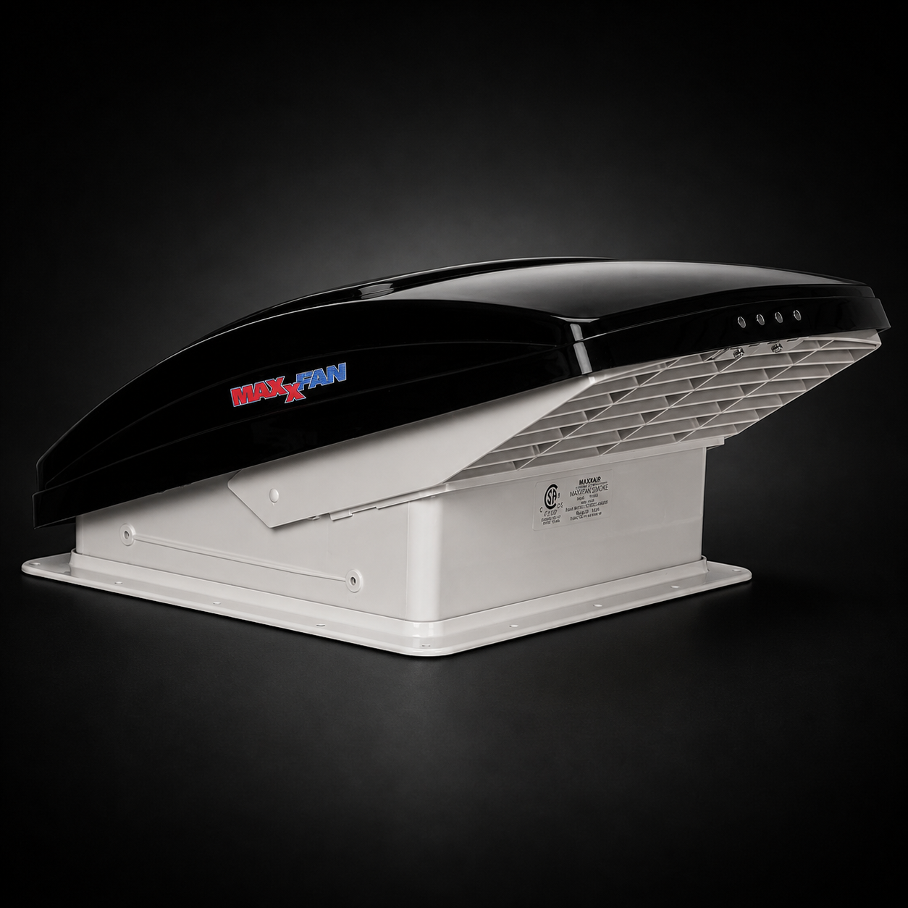
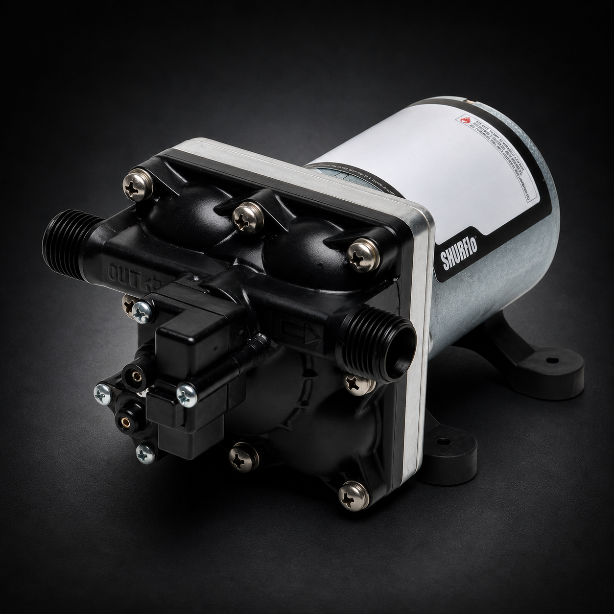
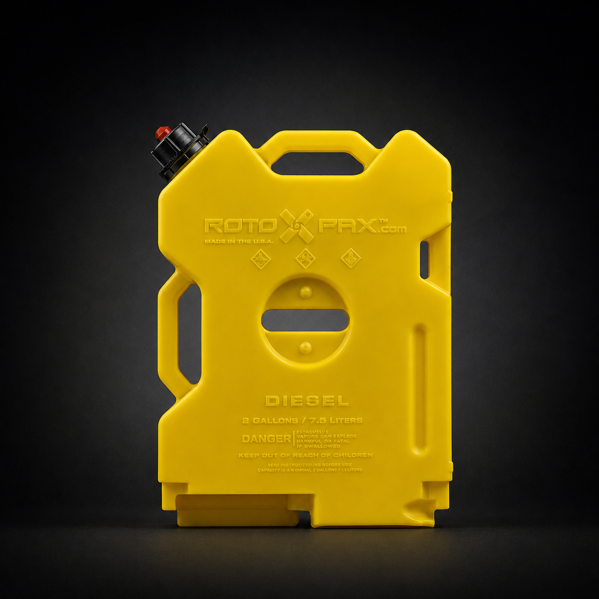
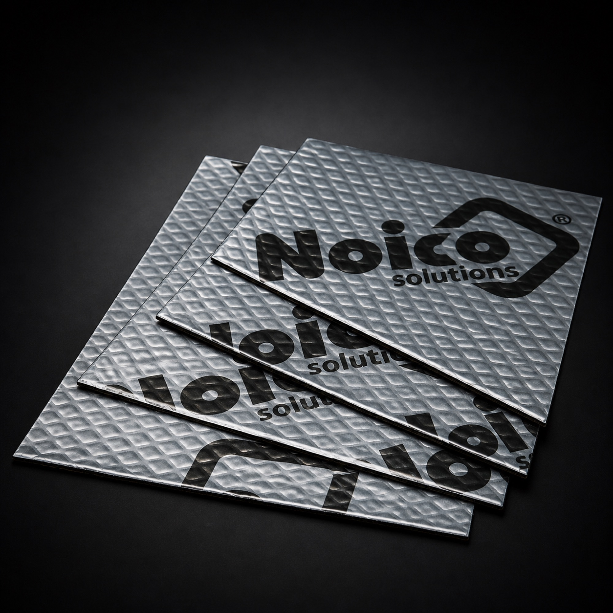
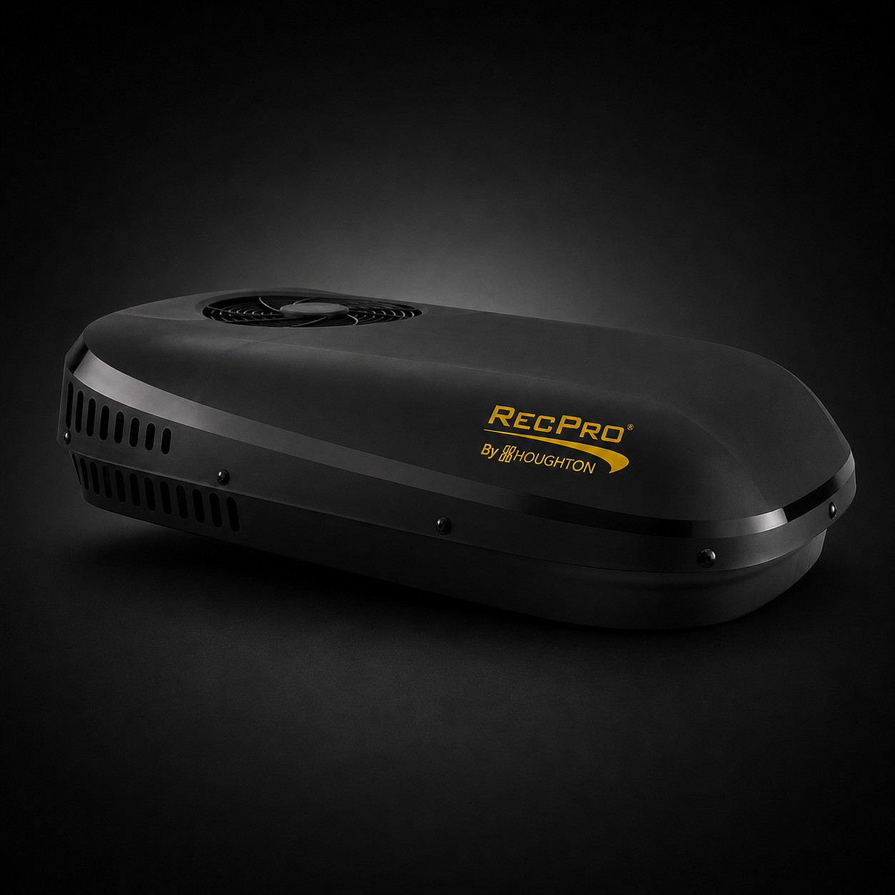
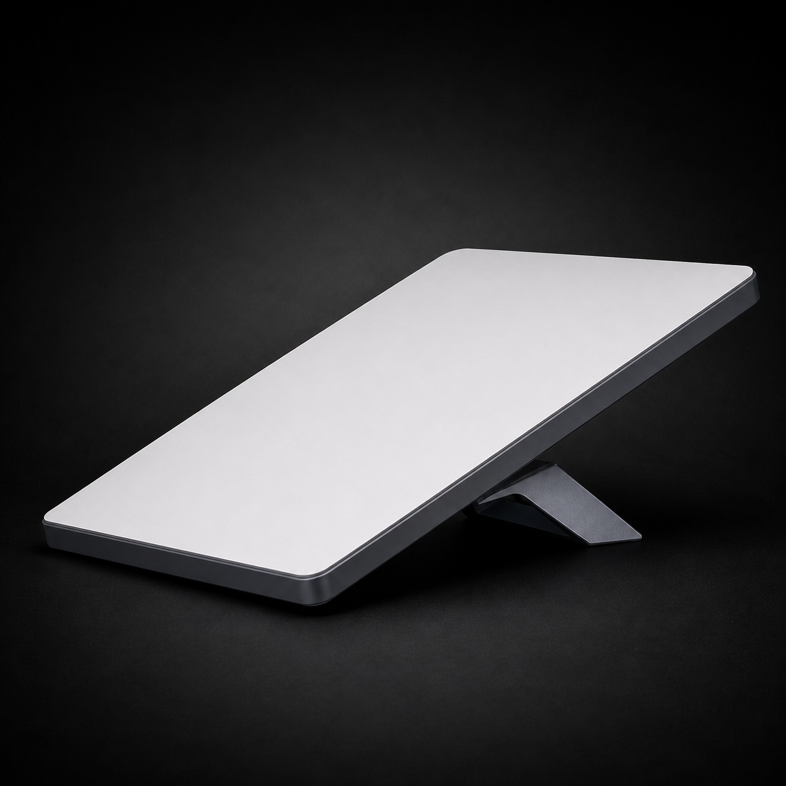
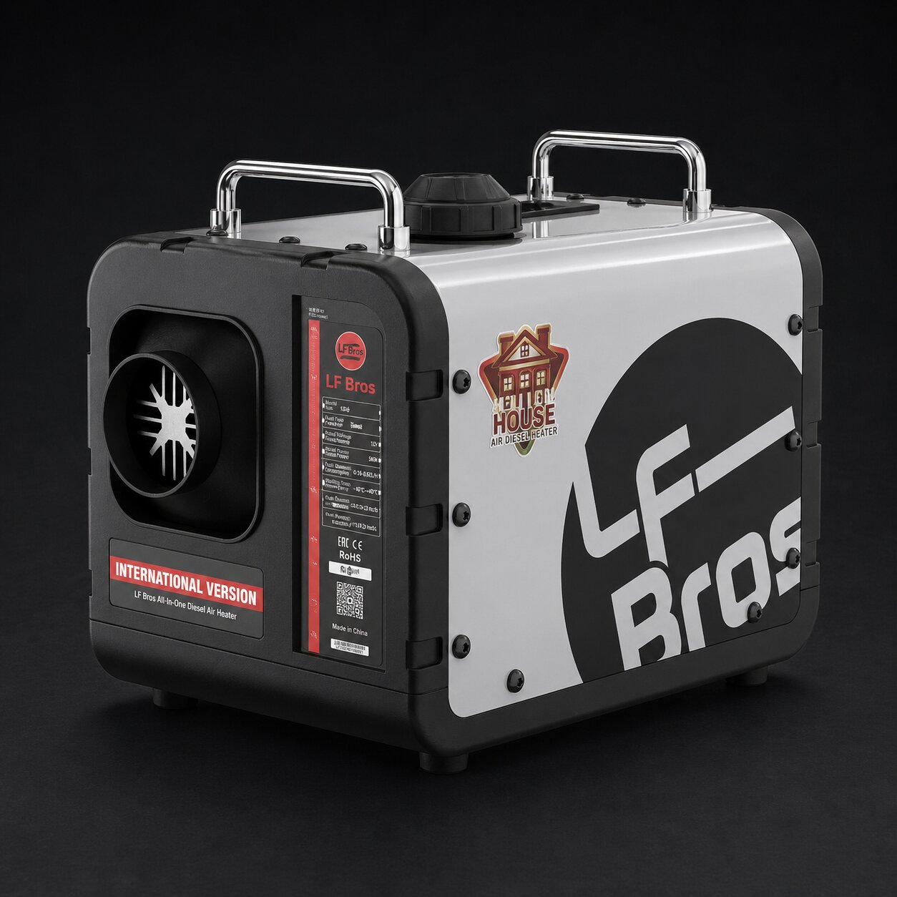

12V 200Ah LiFePO4 Battery
The house battery move when lights, fans, fridge, chargers, and longer stays need real capacity.
 By Chris Follin
By Chris FollinVEHICLE SYSTEMS
Once the vehicle becomes part of the campsite, the gear changes. Batteries, charging, airflow, water, heat, internet, and hard-mounted utility pieces start mattering more than another loose accessory in a tote.
This is the gear for a setup that needs to function as a small camp machine: charge from the alternator, run useful loads, move air, pump water, handle heat, and keep remote work or long trips from feeling patched together.

The house battery move when lights, fans, fridge, chargers, and longer stays need real capacity.

The alternator-charging piece that turns drive time into useful battery recovery.

Clean AC power for the point where USB-only charging stops being enough.

Roof airflow for sleep, heat, and condensation, where the 14 x 14 cutout, wiring, sealant, and water test matter.

A simple 12V pump for making sink and water systems feel intentional.

Flat 2.0-gallon diesel container for heater fuel and exterior vehicle storage, where mount choice and gasket checks matter.

The quiet-build material for reducing panel ring and harsh road noise.

The serious heat answer for a camper or trailer where summer comfort is not optional.

Remote internet for work, routing, weather, and family logistics when sky view and power budget are planned.

Dry heat for cold vehicle camps where propane bottles and damp air become annoying.
I would not buy this lane randomly. Power capacity, charging, airflow, and the real loads have to make sense together or the whole system becomes expensive clutter.
FIRST
Fridge, fan, lights, laptop, pump, heat, and AC all change the math. Guessing here is how people buy the wrong system twice.
SECOND
A big battery without a sane way to refill it is just a heavy countdown timer. DC-to-DC charging is what makes road miles useful.
THIRD
Fans, pumps, sound deadening, AC, and heaters reward clean routing and mounting. Treat them like a build, not loose camp gear.